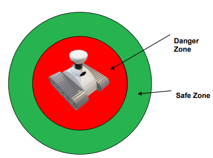
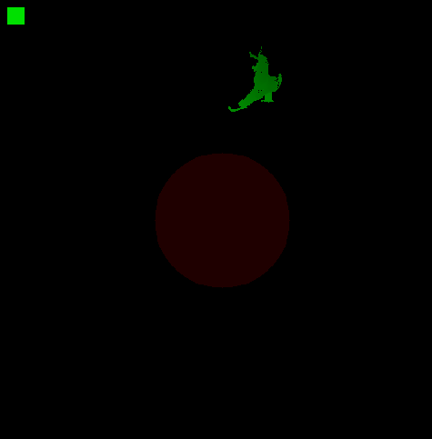
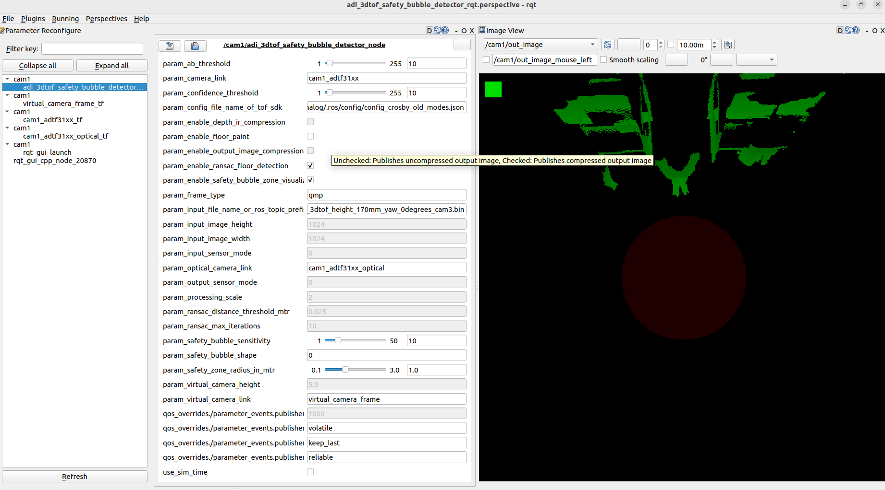

README
Analog Devices 3DToF Safety Bubble Detector
Overview
The ADI 3DToF Safety Bubble Detector is a ROS(Robot Operating System) package for the Safety Bubble Detection application. The Safety Bubble Detectors are the basic building block of any AGV/AMR. The safety zone is a virtual area around an AGV/AMR. The Safety Bubble Detectors are used to detect the presence of any object inside this zone and prevent the AGV/AMR from colliding with the object.
The ADI 3DToF Safety Bubble Detector is developed as a ROS application running on the ADI’s EVAL-ADTF3175D-NXZ Time-of-Flight platform. The Safety Bubble Detection algorithm is highly optimized to run at 30FPS on the EVAL-ADTF3175D-NXZ platform. The node uses ADI ToF SDK APIs to capture the frames from the sensor. The algorithm is run on the captured images and the output is published as ROS topics. The Node publishes the detection flag and the output visualization image as the topics. The Depth and IR images are also published as ROS topics. The topics are published at 30FPS.


Hardware
USB Type-C to Type-A cable - with 5gbps data speed support
Host laptop with intel i5 or higher CPU running Ubuntu-20.04LTS or Ubuntu-22.04LTS
[!note] Refer the EVAL-ADTF3175D-NXZ User Guide to ensure the Eval module has adequate power supply during operation.
[!important] The EVAL-ADTF3175D-NXZ Sensor module must have a firmware version of at least 5.2.5.0. Refer to user guide on firmware upgrade, or see upgrading the firmware.

adi_3dtof_safety_bubble_detector_node
Operation Modes
This package has three different operation modes. Refer to the following intra-links to setup the package accordingly.
Camera Sensor Mode
The package is built on the sensor module and directly interfaces with the image sensor. The adi_3dtof_nxp_ubuntu_20_04_relx.x.x.img provided for the EVAL-ADTF3175D-NXZ sensor already contains this ROS package and is pre-built. In order to use this package, first we need to connect the sensor to the PC, and then SSH into it:
SSH into the Sensor
ssh analog@10.43.0.1
Password: analog
Source ROS Humble
source /opt/ros/humble/install/setup.bash
Source the workspace
source ~/ros2_ws/install/setup.bash
Launch the
adi_3dtof_safety_bubble_detectorpackage.
ros2 launch adi_3dtof_safety_bubble_detector adi_3dtof_safety_bubble_detector_single_camera_launch.py arg_input_sensor_mode:=0
[!note] The operation mode is determined by the launch parameter
arg_input_sensor_mode:=0. This can be modified in the launch file. Refer to the parameter table to see what other parameters can be passed.
Updating the package
[!warning] The time and date may be incorrect on the sensor and this can cause issues when updating the package. To update the time and date, refer to updating date and time.
In order to update and rebuild package to the latest version, run the following commands:
cd ~/ros2_ws/src/adi_3dtof_safety_bubble_detector
git pull
cd ~/ros2_ws
export MAKEFLAGS="-j1"
colcon build --symlink-install --executor sequential --cmake-args -DCMAKE_BUILD_TYPE=Release -DNXP=1 --packages-up-to adi_3dtof_safety_bubble_detector
File-IO Mode
In this camera mode, the package is built on the Host PC in order to evaluate the properties of the package by running a pre-recorded bin file which contains the outputs from the sensor module.
Building the package for file-io
On your PC, create a workspace
mkdir -p ~/ros2_ws/src
Clone the repository
cd ~/ros2_ws/src
git clone https://github.com/analogdevicesinc/adi_3dtof_safety_bubble_detector.git -b v2.1.0
cd ..
Build the workspace
rosdep install --from-paths src --ignore-src -r -y
colcon build --symlink-install --cmake-args -DCMAKE_BUILD_TYPE=Release -DSENSOR_CONNECTED=False
Running the node in file-io
In order to run the package in file-io, it needs input files provided in the release image. Follow the steps below to use existing bin files, or follow the Creating Bin files for File-IO section in adi_3dtof_adtf31xx readme to create your own bin files.
Go to the installation directory of the ADI 3DToF ADTF31xx application
~/Analog Devices/ADI3DToFSafetyBubbleDetector-Rel2.1.0Run the
get_videos.shscript which will download theadi_3dtof_input_video_files.zipfile in the current directory.Unzip it and copy the directory to
~/ros2_ws/src/adi_3dtof_input_video_files.Update the input file argument
arg_in_file_namein the launch fileadi_3dtof_safety_bubble_detector_single_camera_launch.pyas per the above file path.Run the following commands:
# Source the workspace
source ~/ros2_ws/install/setup.bash
# Launch the package
ros2 launch adi_3dtof_safety_bubble_detector adi_3dtof_safety_bubble_detector_single_camera_launch.py arg_input_sensor_mode:=2
[!note] The
arg_input_sensor_mode:=2sets the node to operate in file-io mode. This can be set in the launch file. Refer to the parameter table to see what other parameters can be passed. Enabling file input may slow down the speed of publishing.
Network Mode
The sensor can be operated in network mode where depth and AB (Active Brightness) images are fetched over the local area network. And safety bubble alogirthm is run on the host. The simplest way to use this is to connect the sensor directly to the PC so that a network interface via USB is created with a default IP address of 10.43.0.1. In order to use the Network mode, follow the following steps:
Building the package
The adi_3dtof_safety_bubble_detector depends on libaditof in order to communicate with the sensor. So we will need to build this in the same workspace as adi_3dtof_safety_bubble_detector.
On your PC, create the workspace and clone the required repositories.
mkdir -p ~/ros2_ws/src
cd ~/ros2_ws/src
git clone https://github.com/analogdevicesinc/adi_3dtof_safety_bubble_detector.git -b v2.1.0
git clone https://github.com/analogdevicesinc/libaditof.git -v v6.0.1
# Initialize the submodules for libaditof
cd libaditof
git submodule update --init --recursive
# Return to root of workspace folder
cd ../..
Install dependencies
rosdep install --from-paths src --ignore-src -r -y
Build the packages
colcon build --symlink-install --cmake-args -DCMAKE_BUILD_TYPE=Release --packages-up-to adi_3dtof_safety_bubble_detector
source install/setup.bash
Running the node in network mode
To run the node in network mode, run
ros2 launch adi_3dtof_safety_bubble_detector adi_3dtof_safety_bubble_detector_single_camera_launch.py arg_input_sensor_mode:=3 arg_input_sensor_ip:=10.43.0.1
[!note] The
arg_input_sensor_mode:=3sets the node to operate in network mode. This value can be adjusted in the launch file.arg_input_sensor_ipmust be set to the IP of the sensor. Refer to the parameter table to see what other parameters can be passed.
Parameters
Parameter |
Type |
Default |
Description |
|---|---|---|---|
var_cam1_base_frame |
String |
“adi_camera_link” |
Name of camera Link |
var_cam1_base_frame_optical |
String |
“optical_camera_link” |
Name of optical camera Link |
var_virtual_camera_base_frame |
String |
“virtual_camera_link” |
Name of virtual camera Link |
arg_safety_bubble_radius_in_mtr |
float |
1.0f |
Safety zone radius |
arg_safety_bubble_shape |
int |
0 |
Safety bubble shape, 0: circular, 1: Square |
arg_virtual_camera_height_z_in_mtr |
float |
5.0f |
Virtual camera height, default value is 5 meters. |
arg_input_sensor_mode |
int |
0 |
Input mode, 0: Real Time Sensor, 2: Rosbag bin, 3: Network Mode |
arg_output_mode |
int |
0 |
Output mode, 0: No output files written, 1: avi and csv output files are written |
arg_input_file_name_or_ros_topic_prefix_name |
String |
“no name” |
Input filename: Applicable only if the input mode is 2. Represents input file name or topic prefix. |
arg_enable_ransac_floor_detection |
int |
true |
Enable option for RANSAC floor detection, 0: disable, 1: enable |
arg_enable_depth_ab_compression |
int |
false |
Enable option to publish depth and IR compressed images, 0: disable, 1: enable |
arg_enable_output_image_compression |
int |
false |
Enable option to publish compressed output image, 0: disable, 1: enable |
arg_safety_bubble_detection_sensitivity |
int |
10 |
Number of connected pixels to trigger object detection |
arg_enable_floor_paint |
int |
false |
Enable option to visualize floor paint, 0: disable, 1: enable |
arg_enable_safety_bubble_zone_visualization |
int |
false |
Enable option to visualize safety bubble zone, 0: disable, 1: enable |
arg_ransac_distance_threshold_mtr |
float |
0.025f |
The height of the floor RANSAC can find, default value is 2.5 cm |
arg_ransac_max_iterations |
int |
10 |
Maximum iterations RANSAC is allowed |
arg_ab_threshold |
int |
10 |
abThreshold for the sensor |
arg_confidence_threshold |
int |
10 |
Confidence threshold for the sensor. Default value varies based on sensor serial number. |
arg_config_file_name_of_tof_sdk |
String |
“config/config_adsd3500_adsd3100.json” |
Configuration file name of ToF SDK. Varies based on Eval Board series. |
arg_camera_mode |
int |
3 |
Frame Type. Varies based on Eval Board series. |
Camera Modes
Topics
Topic |
Description |
|---|---|
/depth_image |
16-bit Depth image |
/ab_image |
16-bit IR image |
/out_image |
8-bit output image |
/object_detected |
Boolean to indicate the object detection |
/camera_info |
Camera info |
/depth_image/compressedDepth |
16-bit Depth image from |
/ab_image/compressedDepth |
16-bit IR image from |
/out_image/compressed |
8-bit output image from |
Output Images
Sample output images are shown below:
/cam1/depth_image

/cam1/ab_image

/cam1/out_image

[!note] To setup Safety Bubble Detector with 4 devices refer Setting up 4 device for Safety Bubble Detector
Parameter Tuning
Some parameters of adi_3dtof_safety_bubble_detector ROS node can be modifed during runtime. The Perspective file is present in rqt_config/ folder.

The GUI can be started by running the following command.ros2 launch adi_3dtof_safety_bubble_detector adi_3dtof_safety_bubble_detector_rqt_launch.py
Make sure the adi_3dtof_safety_bubble_detector node is already running before executing this command.
Appendix:
Updating Date and Time
The customized ubuntu image loaded into the sensor will automatically connect to any WiFi hotspot with the SSID as ADI and password set as analog123. This network connection will automatically sync the system time using the available internet connection.
Build Flags
Flag Name |
Type |
Default Value |
Description |
|---|---|---|---|
SENSOR_CONNECTED |
Boolean |
TRUE |
Set to |
BUILD_SBD_STITCH_HOST_NODE |
Boolean |
FALSE |
Set to |
Upgrading the firmware
To check the existing firmware version, log into the sensor device via SSH.
$ ssh analog@10.43.0.1
Username: analog
Password: analog
Run command:
cd ~/Workspace/Tool/ctrl_app
./ctrl_app
Your output would look like this:
V4L2 custom control interface app version: 1.0.1
59 31
05 02 05 00 61 35 39 61 66 61 64 36 64 36 63 38 65 37 66 62 31 35 33 61 32 64 62 38 63 64 38 38 34 30 33 35 39 66 31 37 31 39 35 61
59 31
The first four values in the third line represents the version number, in this case, 5.2.5.0. If it is lower than this value, follow these steps below to update.
On your PC, install ADI ToF SDK release v6.0.1
After installing goto the installation folder and run the following commands to download the image
cd ~/Analog\ Devices/ToF_Evaluation_Ubuntu_ADTF3175D-Relx.x.x/image. chmod +x get_image.sh ./get_image.sh.
Latest image will be downloaded at ./image path as NXP-Img-Relx.x.x-ADTF3175D-.zip. Extract this folder using unzip NXP-Img-Relx.x.x-ADTF3175D-.zip command.
This folder contains the NXP image and ADSD3500 firmware(Fw_Update_x.x.x.bin).
Run the following command to copy the Fimware to the NXP device
$ scp Fw_Update_5.2.5.bin analog@10.43.0.1:/home/analog/Workspace Username: analog Password: analog
Now login to the device and run the Firmware upgrade command.
[!warning] Do NOT reboot the board or interrupt the process as this may corrupt the module
$ ssh analog@10.43.0.1
Username: analog
Password: analog
$ cd Workspace/ToF/build/examples/data_collect/
$ ./data_collect --fw ~/Workspace/Fw_Update_x.x.x.bin config/config_default.json
Reboot the board after the successful operation.